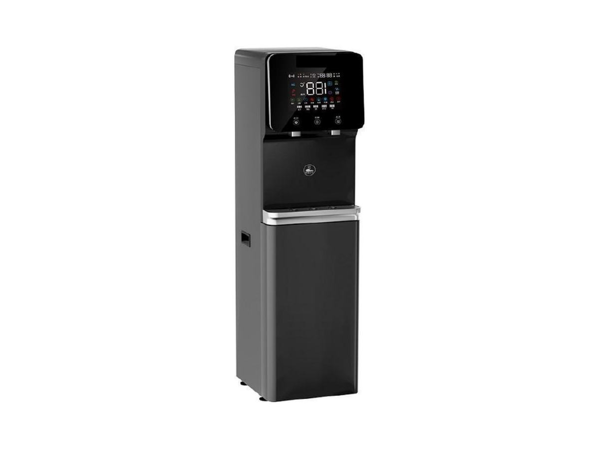
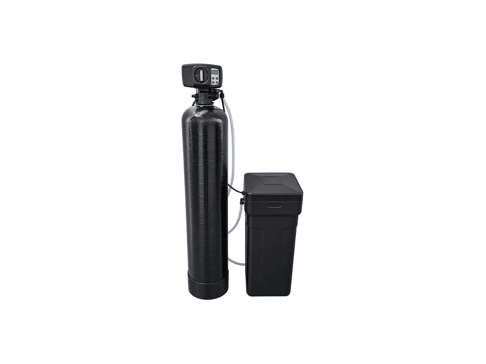

01 / Cocina
Cocina — bajo fregadero
Oculto bajo el fregadero: una potente ósmosis inversa para la cocina familiar.
Modelo representativo:RP-U09 — 800–1400 GPD · 4 opciones.
ROPureOEM / Estudio de producto OEM
Empiece con un modelo confirmado. Adáptelo a su mercado. Apruebe su muestra.
Para propietarios de marcas y distribuidores en la UE, el Reino Unido, Estados Unidos, Oriente Medio, el Sudeste Asiático y Australia.
Explorar modelos Hablemos de su proyecto
Selección de productos · Marca privada · Coordinación de exportación

Buscar por escenario
01 / Cocina
Oculto bajo el fregadero: una potente ósmosis inversa para la cocina familiar.
Modelo representativo:RP-U09 — 800–1400 GPD · 4 opciones.

02 / Sobremesa
Café recién molido y agua purificada por RO en una sola unidad de sobremesa.
Modelo representativo:RP-C11 — de grano a taza · agua purificada por RO.

03 / Comercial
Agua caliente, fría y con hielo, independiente, para oficinas, escuelas y espacios compartidos.
Modelo representativo:RP-C23 — RO 100G · 50–100 personas.

04 / Toda la casa
Ablandamiento central para toda la casa.
Modelo representativo:Serie RP-W01 — 32,000–64,000 grain · 3 tamaños.
Una mirada más cercana
Modelos confirmados del catálogo: revise primero las especificaciones. MOQ: 200 unidades por modelo.
SobremesaCafetera 4 en 1 de grano a taza con purificación RO
 Sobremesa
SobremesaAgua con gas, fría y caliente: dos variantes
 Bajo fregadero
Bajo fregaderoPurificador RO de agua hidrogenada bajo fregadero
 Grifo
GrifoFiltro de grifo giratorio 360°
 Ducha
DuchaFiltro de ducha rectangular
 Bajo fregadero
Bajo fregaderoSistema RO de cartucho extraíble sin herramientas
 Sobremesa
SobremesaPurificador RO con jarra calentadora
 Sobremesa
SobremesaPurificador RO con hielo, agua caliente y fría

OEM vs ODM
Elija un modelo confirmado y hágalo suyo: logotipo, color, filtros, grifo, embalaje.
Personalice estructura, función y molde según su brief. Cada brief requiere primero una evaluación de ingeniería.
¿Busca una línea de filtros de agua? Fabricante OEM de filtros de agua — filtros de agua fabricados para su marca →
Del modelo a su marca
Fábrica y control de calidad


Fotos de fábrica y control de calidad: producción, pruebas y envío.
Certificación
Cuéntenos su modelo y mercado objetivo; confirmamos la lista exacta antes de que haga su pedido.
Mercados típicos:UE · Reino Unido · EE. UU. · Oriente Medio · Sudeste Asiático · Australia
Otros mercados, incluido CB donde aplique, se confirman por modelo a pedido.

Preguntas frecuentes
200 unidades por modelo.
Sí: las muestras son pagadas y su costo se reembolsa con su primer pedido en volumen. Apruebe la muestra, marca y embalaje incluidos, antes de la producción en volumen.
El plazo de entrega se confirma por cotización; depende del modelo, la cantidad y la certificación.
El pago debe realizarse antes del envío. No ofrecemos condiciones de crédito.
Confirmado por mercado, por modelo y por pedido. Cuéntenos su modelo y mercado objetivo y confirmaremos la lista exacta antes de que haga su pedido.
Guías

Guía de compra
La MOQ es de 200 unidades por modelo para purificadores de agua de marca privada. Muestras primero, tarifa reembolsada con su primer pedido en volumen, 40 días para el envío tras la aprobación de la muestra.

Guía de compra
Adapte la capacidad de RO a su agua de alimentación antes de elegir un modelo: capacidades de sobremesa, bajo fregadero y dispensador comparadas.

Guía de compra
El voltaje y la frecuencia se pueden configurar según el país objetivo; confírmelos por modelo y pedido.
Cuéntenos su mercado, tipo de producto y cantidad.